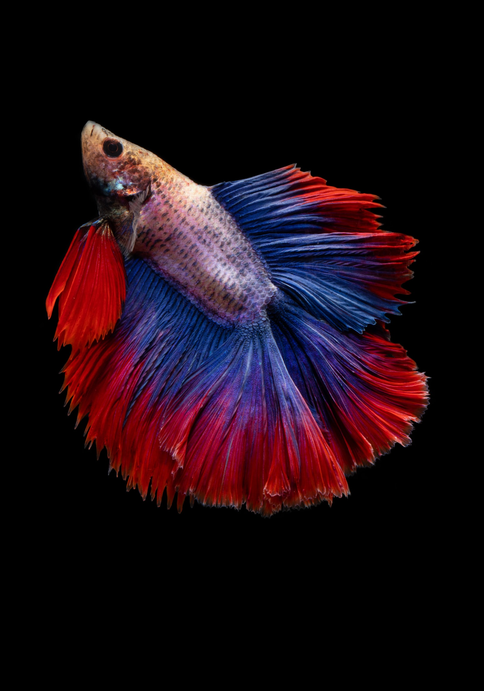

Martin's fish collection'

- Type of Fish: Blue Fish
- Christian Name: Barry Gordy
- Length: 4 feet
- Diet: Specifically non-vegan foods
- Harvest Location: MoTown Records
Martin's harvesting adventure
Everyone should have my boring hobby
The only reason I have fish is because their skin doesn't make good moccasins
Out of the way places I, Martin Shkreli, harvest fish from
- Neighbor Tim's even nicer aquarium
- Tom Sawyer Island at Disney World
- 'Nam